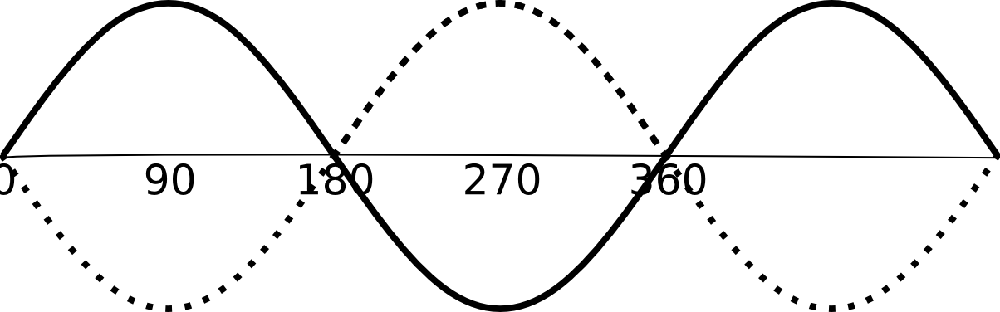
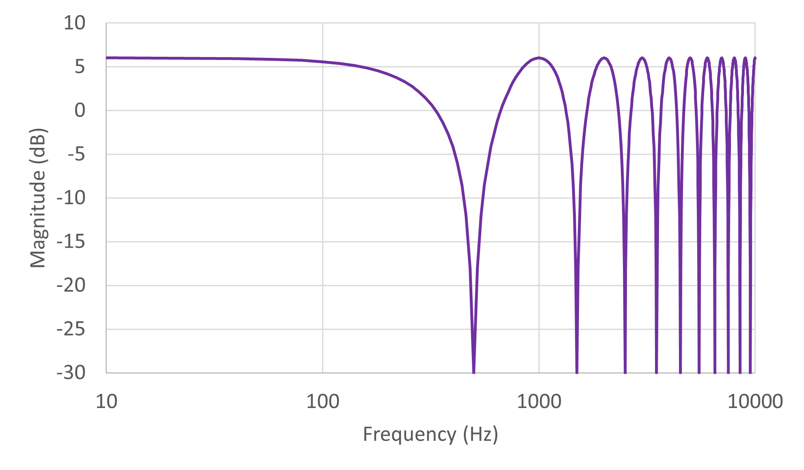

Delay lines are at the heart of digital waveguides.
They form the basis for all digital waveguide modelling, and can be used to simulate the propagation of travelling waves.
In a delay line, audio samples are stored in a pre-allocated memory buffer as they arrive,
while previously stored samples are read from the buffer once the delay time has elapsed.
In other words, in a simple delay, each sampling period includes one read operation (retrieving the delayed signal)
and one write operation (storing the current signal). When the end of the memory buffer is reached,
the system should loop around to the beginning of the buffer.
In signal processing, this process of looping around the buffer is known as a circular buffer and it is quite efficient.
The Web Audio API's DelayNode has a delay line, which is an internal buffer that holds delayTime seconds of audio.
The processing involves writing to the delay line, and reading from the delay line.
It is implemented with a circular buffer so that each sampling period, only one element of the buffer array is changed;
the oldest sample in the buffer is overwritten with the new sample from the DelayWriter.
Example – comb filter
Some interesting effects occur if one just sums an input signal with a delayed version of that input.
We can do some mathematical analysis to see how this operation affects the frequency content of a signal.
For an input signal x[n] and a delay of D, the output is just y[n]=x[n]+x[n-D].
Suppose the input is a sine wave, and the delay is just right to shift the sine wave so that it is 180 degrees out of phase with the original.

Then the two waveforms cancel out when summed together.
Suppose a delay of D = 1 millisecond is used. This will then result in notches in the response that extend all the way to -inf dB, and occur at 500 Hz, 1500 Hz, 2500 Hz, etc.
The magnitude response is shown below.
>
This is known as a comb filter, since when plotted with linear frequency, the notches resemble the teeth of a comb as used for your hair.
The comb filter is implemented simply by sending both a source and a delayed copy of that source to the destination.
The source is an oscillator.
By choosing, for instance, delay of 1 ms and frequency of 1500 Hz, one can hear that the magnitude drops to 0, as expected from the magnitude response.
Frequency
Delay (ms)
The core javascript code is simply
var context = new AudioContext()
let tone = new OscillatorNode(context,{frequency:440})
let delay= new DelayNode(context,{delayTime:0.005})
tone.start()
tone.connect(delay)
tone.connect(context.destination)
delay.connect(context.destination)
Delay.oninput = () => delay.delayTime.value = Delay.value / 1000
Frequency.oninput = () => tone.frequency.value = Frequency.value